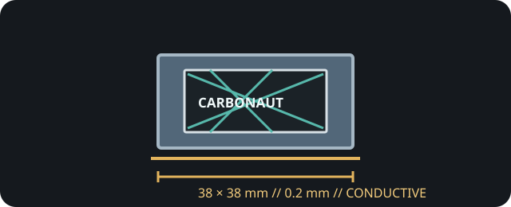

[ INDIVIDUAL COMPONENT // COOLING ]
Thermal Grizzly Carbonaut 38 × 38 × 0.2 mm
Thin reusable carbon-fiber thermal sheet with a polymer component; Thermal Grizzly explicitly warns that Carbonaut is electrically conductive.

IDENTIFICATION: The exact size is 38 × 38 mm and 0.2 mm thick. Unlike electrically insulating thermal pads, Carbonaut is electrically conductive and requires careful placement.
Manufacturer specifications
| Catalog subcategory | Thermal Accessories |
|---|---|
| Exact model / code | Thermal Grizzly Carbonaut, 38 × 38 × 0.2 mm; TG-CA-38-38-02 |
| Material | Carbon-fiber thermal sheet with a specially developed polymer, as described by Thermal Grizzly. |
| Dimensions / thickness | 38 × 38 mm; 0.2 mm thick. |
| Thermal conductivity | No numerical conductivity value is published in the referenced manufacturer product information. |
| Electrical properties | Electrically conductive. Prevent contact with exposed electrical circuitry. |
| Operating range | −250 °C to +150 °C, as stated in Thermal Grizzly product information. |
Application & compatibility cautions
- Use only where a 0.2 mm sheet interface is mechanically appropriate. Verify die/package size, cooler contact area, and mounting pressure before installation.
- Because the sheet is electrically conductive, keep it strictly within the intended contact footprint and away from exposed components, socket pins, and board traces; do not energize a system if it is displaced.
- Do not substitute it for an insulating pad across VRAM/VRM gaps or assume suitability for every CPU/GPU cooler. Follow the host and Thermal Grizzly installation guidance.
Manufacturer sources
- Thermal Grizzly — Carbonaut 38 × 38 × 0.2 mmProduct material, exact model dimensions, and explicit conductive-material warning.
- Thermal Grizzly — Carbonaut product data sheetManufacturer download for technical and handling information.
This static catalog entry is an identification aid, not a compatibility guarantee; electrical clearance and precise placement are essential.